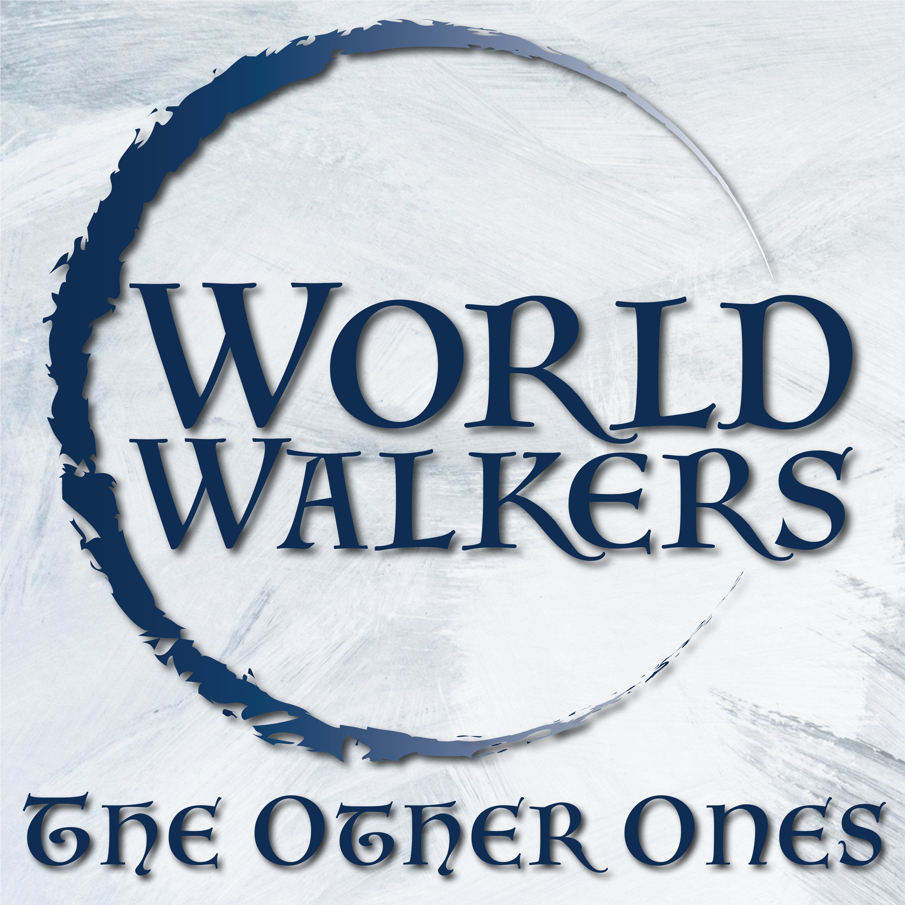
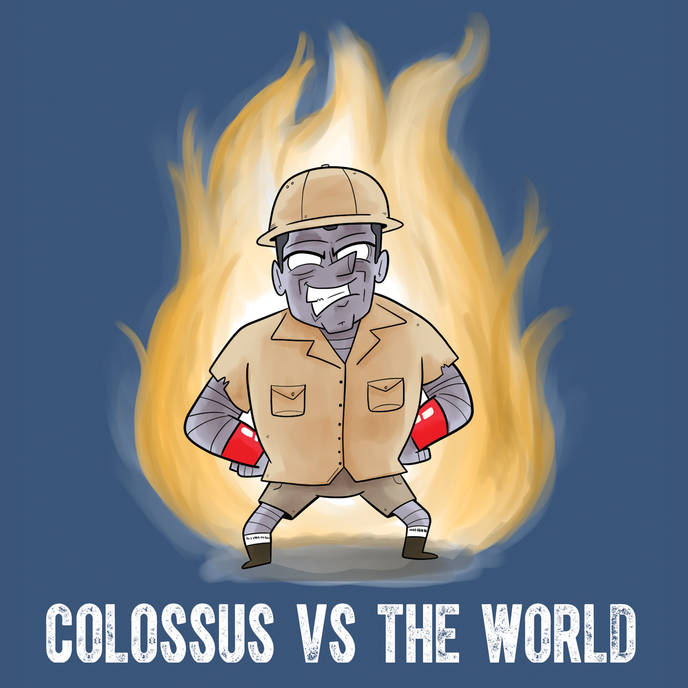

World Walkers Universe
The Podcasts
245 episodes across four shows. All free. All preserved. Pedro edited and produced every one of them — many while battling cancer. You can still subscribe in any podcast app.
World Walkers
A funny 5th Edition D&D actual play podcast set in Pedro's custom multiverse of homebrew worlds. The flagship — 194 episodes across 5 seasons.
World Walkers: Cog
Airships, gunslingers, ex-slave wargolems, and a shattered kingdom of magic. A spinoff set in the Steam-Powered World of Cog.

The Other Ones
When Destiny calls, these people hang up immediately. The original World Walkers cast, new characters, same beloved chaos.

Colossus Vs The World
Pedro's brother Frank takes on the role of Colossus while knowing absolutely nothing about the Marvel Universe. A pure joy from start to finish.
Patreon members get even more. Pedro's Patreon has been running for nearly 10 years and includes 700+ exclusive posts — bonus episodes, The Travelers, Brummelstone's Day Off, and more. The paywall has been removed, so everything is free to access. Explore the archive →